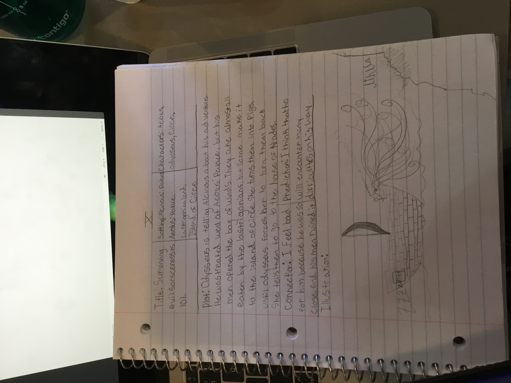

My liteature artifact is my Odyssey notebook. Every time we read another book, we had to make a summary. We had to come up with a title, and fill in the characters and the setting. we had to summarize the chapter. We made a prediction and a connection. Lastly, we had to draw a picture about what happened. I drew Odysseus' men opening the bag of winds, and being sent back to Aeolia.
